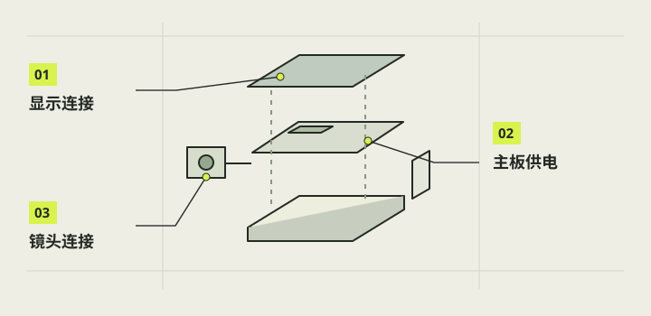

基础连接与供电检查
第一次连接只把主板、摄像头、屏幕和可靠电源接成最小系统；拉杆、按钮、白灯与打印外壳先留在一旁。所有插拔都在正常关机并断开电池及其他电源后完成。你要核对的是具体接口、排线朝向和供电路线，而不是凭“能插进去”就通电；屏幕和摄像头属于不同排线口。

本章完成目标
- 完成 CSI 与 DSI 的断电核对
- 确认屏幕 5V/GND 与 Pi PWR IN 路径
- 形成首次上电前的可观察检查表
开始前准备好
- 已核 Pi3B+、CM2、Waveshare 4.3-DSI-TOUCH-A 的具体型号
- 主板已正常关机、断开电池与所有其他供电
- 有厂商接线图和清晰的实物接口照片
- PWR IN
- Pi3B+ 的 Micro USB 主供电入口。
- 空位插壳
- 插头塑料外壳占一个针位，但该位置没有金属线端。
确认完全断电与接口
先确认电池、充电线、外接 USB 电源均已拔离，主板已冷却，存储卡和排线不会被带电插拔。将 Pi3B+ 元件面、CAMERA、DISPLAY 和 PWR IN 拍在同一组照片中，标出与厂家图一致的朝向；锁扣若已损伤或排线端子有折痕，先暂停。这里是上电前检查，不需要先运行任何命令。
注意 / 不要仅凭屏幕熄灭判断主板已无电。
核对相机 CSI
把 CM2 的配套排线与 Pi 的 CAMERA 座、模组端座逐一对照，按连接器和厂家图核接点面、锁扣与插入深度。排线应平直进入锁扣，并留适度弯曲余量；镜头不要被线拉歪。若发现另一种宽度、触点排列或转接板，先重新确认适配件，不通过反折或斜插硬凑。
注意 / 此排线不能接到 DISPLAY/DSI 座。
核对屏幕 DSI 与供电
本屏幕对应 Pi3B+ 的 15 针 DSI 排线接 DISPLAY 座；再对照实物插壳：红线到物理 2/5V、黑线到物理 6/GND，塑料三位壳覆盖的物理 4 是空位。物理号从排针方向核对，不以颜色单独判断。若你用的是别的屏幕型号或屏幕供电线已换，按该型号官方图重新建立针表。
注意 / 5V 与 GND 接反可能损坏设备；不清楚朝向时停下核照片。
核主电源链
Pi3B+ 的主电源经合适的 USB-A 转 Micro USB 线进入 PWR IN，不经过 40 针零散跳线或面包板。可先用已有且曾让基础系统启动的 PB721 作对照，再单独评估内置电池样品；不要同一轮混用两个供电来源。核电池输出口和充电口、接头松紧、线材完好与标称 5V，记录当前样品和测试配置。
注意 / 不能凭 3A 标称或万用表空载 5V 判断拍照负载稳定。
上电前逐项复核
让第二个人或照片清单再看一遍 CAMERA/CSI、DISPLAY/DSI、屏幕 2/6 针和主供电入口。确认没有裸露导体碰外壳、散热片未松放、拉杆/按钮/灯线此轮未接。接下来的第 06 章才处理系统卡与首次启动；如出现异味、异常发热或重复重启，应停止供电并回到本章查线。
注意 / 本章不证明长期温升、边充边用或最终封壳的电源质量。
完成后，逐项打勾。
勾选帮助你记录进度，不代表项目替你完成了实机验收。
遇到问题，从这里排查。
屏幕不亮但主板看似启动
先正常停机并断电，再核 DSI 锁扣、排线方向、屏幕 5V/GND 与所用屏幕型号；不要带电重插。
启动时反复重启或出现欠压
停止新增负载，分别核电池输出、Micro USB 线材和连接松动；只记录本次配置，不据一次空载电压下结论。
本项目的实际进展
- 本项目 2026-10-12 有屏幕显示和触摸短时通过记录；后续 C 实机记录也识别到 IMX219。
- D 2026-10-24 实物照片确认屏幕红 2、黑 6、4 空位；蓝色旧母头具体针号当时未核，不能依旧照片照搬控件接法。
资料与核对依据
- 本项目基础硬件连接 · camera-reference/docs/hardware-and-tests.md
- D 2026-10-24 L1 实物接线记录 · camera-project/D-控件供电/handoff.md
- Waveshare Pi3B+ 接线指南 ↗
- Pi3B+ 官方供电与接口 ↗
资料核对日期：2026-10-30。不同硬件、系统版本和材料需要重新验证。